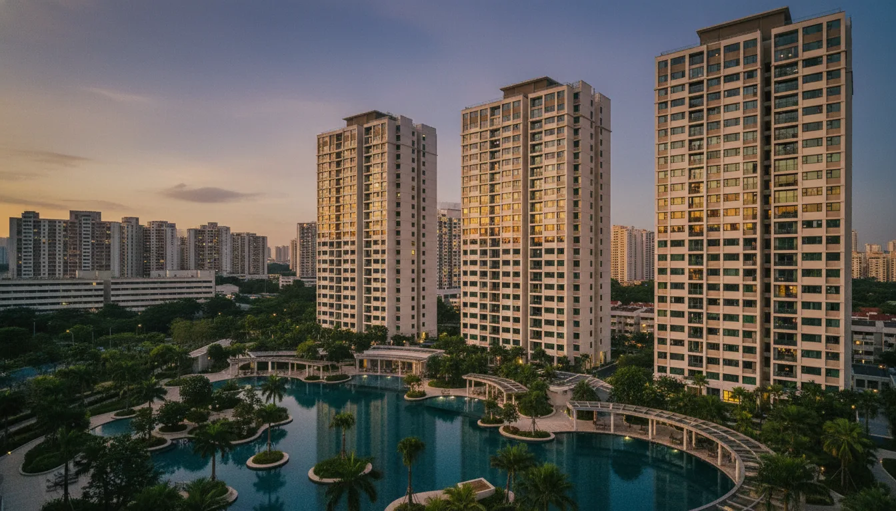
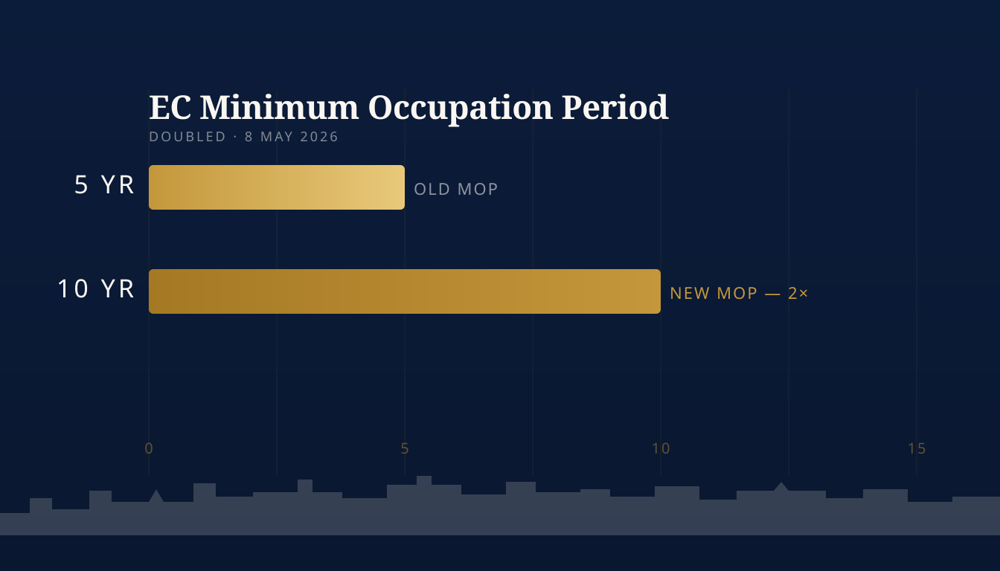

EC MOP Doubled to 10 Years — What May 2026's Executive Condo Reset Means for Your Mortgage

- What MND just changed on 8 May 2026
- Why the reset, and the price story behind it
- 10-year MOP: what it really costs upgraders
- 90% first-timer quota: who actually wins
- DPS scrapped: cashflow and stress-test impact
- Pre-rule vs new-rule ECs — the choice
- EC financing in the new regime
- Three moves to make this month
What MND Just Changed on 8 May 2026
On Friday 8 May 2026, the Ministry of National Development announced the most material rework of Executive Condominium rules in over a decade. Four moving parts, all aimed at first-time families, all biting from the next Government Land Sales tender onwards. Channel News Asia's full coverage of the EC reset has the policy text; here's what matters for your mortgage.
- MOP doubled from 5 to 10 years. New EC buyers cannot rent out the whole unit, buy another residential property, or sell to Singaporeans/PRs until 10 years after key collection.
- Full privatisation pushed from 10 to 15 years. Foreign and corporate buyers are locked out for an extra 5 years, narrowing the resale pool late in the cycle.
- First-timer quota raised from 70% to 90%, with the priority window stretched from 1 month to 2 years. Second-timers get the leftover 10% only after the priority window closes.
- Deferred Payment Scheme abolished. All EC buyers must use the Normal Payment Scheme — progressive payments tied to construction milestones, no 20%-now-80%-at-TOP option.
Rules apply to EC GLS sites with tender closing on or after 8 May 2026. Five upcoming projects keep old rules: Senja Close, Sembawang Road, Miltonia Close, two Woodlands Drive 17 sites — tenders closed Aug 2025 to Apr 2026.

The MOP doubles from 5 to 10 years — the single biggest change in EC liquidity since the scheme launched in 1995.
Why the Reset, and the Price Story Behind It
Two numbers explain Friday's package. EC psf prices have more than doubled in a decade: median new-EC psf hit S$1,843 between January and April 2026, against S$782 in 2016, per PropNex Research and URA. A 1,000 sqft EC now clears S$1.85 million.
Buyer mix shifted with prices. In 2020, half of EC buyers were first-timers; by 2024-2025 that fell to 30-40%, with second-timers crowding out first-time families. From 2021-2025, about 75% of post-MOP ECs flipped within 5 years of MOP, up from 45% in the prior cycle. That's not housing — that's an asset class.
The fix is structural: lengthen MOP, extend privatisation, ring-fence the launch quota, kill the DPS premium. Minister Chee Hong Tat said openly he hopes "developers reducing their bids and the prices for their ECs." NUS Professor Sing Tien Foo expects the rules to stabilise the EC market over 3-5 years, with no sharp price rise if income growth holds. Near-term: expect a buying flurry on the five pre-rule projects.
10-Year MOP: What It Really Costs Upgraders
The MOP isn't a tax. It's a clock. Doubling it from 5 to 10 years changes three things at once:
- Resale liquidity. No selling to Singaporeans or PRs for 10 years, no foreigner/corporate buyers for 15. The natural exit at year 5 (and the 75% flip rate behind it) is gone.
- Second-property timing. No buying another residential property during MOP. If your plan was "EC first, private later," the runway just doubled. That changes the ABSD calculus completely — and may push some buyers toward a private condo from day one. Our condo and private property loan guide walks through the alternative.
- Rental optionality. Whole-unit rental is locked for 10 years too. Room rental remains permitted under HDB rules, but cashflow assumptions built around full-unit yield need a redraw.
A 35-year-old buying a new-rule EC cannot sell or buy a second property until age 45. If your plan includes a second residential investment in your early 40s, an EC is no longer the obvious vehicle. Run numbers against a private condo via our TDSR/MSR affordability calculator before committing.
90% First-Timer Quota: Who Actually Wins
90% of units reserved for first-timers in launch month, with the priority window extended to 2 years — first-timers go from underdog to overwhelmingly favoured.
Under the old 70/30 split, second-timer demand often cleared by lunchtime on launch day. Under 90/10 plus a 2-year priority window, second-timers face a structural disadvantage:
| Buyer Type | Pre-8 May 2026 | Post-8 May 2026 |
|---|---|---|
| First-timer launch quota | 70% | 90% |
| Priority window | 1 month | 2 years |
| Second-timer access | From month 2 | From year 3 |
| Resale levy (second-timer) | Applies | Applies |
For first-time families, balloting odds improve dramatically. Combine the 90% reservation with the S$16,000 income ceiling and the up-to-S$30,000 CPF Housing Grant, and the EC route tilts back to its original brief. Second-timers face a real decision: the 5 pre-rule projects are the last realistic shot at an EC under the old quota.
DPS Scrapped: Cashflow and Stress-Test Impact
DPS let buyers pay 20% upfront and 80% at TOP. Two issues:
- 2-3% premium. DPS units were priced higher to compensate developers for deferred cashflow. Premium gone for everyone.
- Stress-test gap. DPS deferred the loan documentation moment — TDSR could shift between booking and TOP. Removing DPS forces full MAS Notice 645 assessment up front against the 4% floor. Our MAS 4% stress test guide covers the math.
Net effect: lower headline price (DPS premium gone), but cash flows earlier through progressive payments. For most buyers it's a wash — same money, staged with construction milestones instead of one lump at TOP.
Pre-Rule vs New-Rule ECs — The Choice
For the next 12-18 months, Singapore EC buyers face a genuine fork. Five projects keep the old 5-year MOP and 10-year privatisation rules; everything launching after them is on the new regime.
| Dimension | Pre-rule (5 projects) | New-rule (post-8 May) |
|---|---|---|
| MOP | 5 years | 10 years |
| Full privatisation | Year 10 | Year 15 |
| First-timer quota | 70% / 1 month | 90% / 2 years |
| DPS available? | No (already removed) | No |
| Likely launch price psf | S$1,800-1,900 | Uncertain — MND wants lower bids |
| Best fit | Buyers who want resale flexibility at year 5 or a faster second-property runway | First-timers with a 10-year horizon who want the easier ballot |
Pre-rule projects will see front-running demand. New-rule launches likely come with softer land bids as developers price the longer hold. Property analysts cited in Straits Times agree on a "near-term demand spike, longer-term moderation" trajectory.
EC Financing in the New Regime
EC loans are bank loans, not HDB concessionary loans, and that hasn't changed. What's worth re-running:
1. LTV and Down Payment
First-property bank loan: max 75% LTV, 25% down (5% cash + 20% cash/CPF). On a S$1.85M EC: roughly S$92,500 cash + S$370,000 cash or CPF across the booking and signing stages, before any construction-linked progressive draws.
2. TDSR/MSR Both Apply
ECs sit under both the 55% TDSR and the 30% MSR (Mortgage Servicing Ratio) caps — the 30% MSR usually binds first. Use today's actual rates plus the 4% stress-test floor on the larger of the two; see our TDSR vs MSR breakdown.
3. Today's Bank Rates
Fixed packages from around 1.40% p.a., SORA-pegged floating rates from 0.97% for qualifying loan sizes. Both well below the 2.6% HDB concessionary rate, but ECs aren't HDB-loan-eligible anyway. Live comparison on our current rates page.
4. CPF Housing Grant
First-timer EC buyers can claim up to S$30,000 in CPF Housing Grants — offsets initial outlay, not loan eligibility. Rules at the CPF Home Ownership portal.
5. Progressive Payment Cashflow
With DPS gone, model the full Normal Payment Scheme drawdown: foundation, structure, walls, roof, ceiling, doors, carpark/road, TOP, CSC. Monthly mortgage scales with each disbursement. Full cashflow walk-through and a downloadable schedule inside the Singapore Mortgage Free Report.
Three Moves to Make This Month
- Chasing a pre-rule EC? Get an In-Principle Approval in 14 days. Pre-rule launches will be ballot-heavy; banks honour IPAs for 30 days.
- Second-timer? Rerun EC vs private condo. With 90/10 quota and 2-year priority, the EC route just got materially harder — a private condo may be the cleaner path.
- First-timer with EC income? Stress-test against 10-year MOP: no whole-unit rental, no second property, no resale until 2036. Size the loan accordingly.
- Grab the playbook. Download the Singapore Mortgage Free Report — EC TDSR/MSR worksheets, 75% LTV cashflow schedule, EC vs private condo decision sheet in one PDF.
Free, Independent Second Opinion on Your EC Mortgage
EC, private condo or HDB — we compare 16+ MAS-regulated banks at zero cost. Pre-rule project shortlist, new-rule cashflow modelling, ABSD timing — in one call.
Run My EC Numbers →Prefer a personal review? WhatsApp Dan Ler at +65 8752 0859 for a free portfolio assessment. Banks pay our fee — you pay nothing.
Or grab the full playbook: Singapore Mortgage Free Report — EC down-payment schedule, TDSR/MSR worksheets and refinance triggers in one PDF.
Nexus Mortgage SG is an independent Singapore mortgage advisory. This article is general information, not financial advice. Figures are illustrative and reflect MND, URA, MAS and IRAS positions as of 9 May 2026; rules and bank rates can change. Sources: CNA EC reset coverage, MND, MAS Notice 645 (TDSR), IRAS ABSD, CPF Home Ownership, URA.